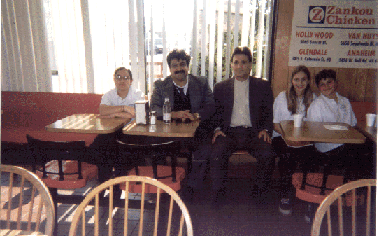
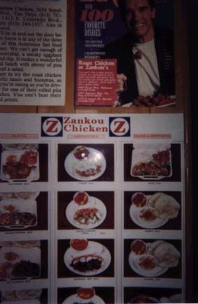

8Zancov9
14155 E. Colorado 'o.oxi wra3 Kalifornio3 Glende3l ka.aki me]5 ,ad hamow ovdyliknyrov ha3gagan ja,aran mu ga35 or gu sbasarge ha3gagan ja,yr1 Mia3n ha3yr [yn or g`yr;an hon ovdylov5a3l ,ad 0dar martig yv n,anavor tyrasannyr a3xyla/ yn ovdylov hamar ha3gagan yv mi]in6aryvylyan ja,yr1
| 
|
!7 O|vr y.a/ e sgizpu a3s ja,aranin1
Be3rov;5 !(%(6in5 ovr ,ad sirovyxav =o.owovrten1
ª7 I|n[ e ca.dniku 2yr ja,yrovn hamow ullalovn1
Ca.dnik gu bahynk5 [ynk grnar 3a3dararyl1
#7 In[o|v Zancov anovnu oro,yxik1
In[bes cidek5 Zancovn Ha3asdani me] cyd mun e5 a3t anovnow go[yxink1
$7 Undanyga|n cor/ e1
A3o45 undanygan cor/ mnaxa/ e min[yv hima1
%7 Kani| masnajiv. ovnik Kalifornio3 me]1
{ors masnajiv. Holiwovdi5 Glende3li5 Wen Na3si yv Anaha3mi me]1
^7 In[be|s g\oro,ek qanov;i mu wa3ru1
A-a] g\oro,eink ha3gagan pnag[ov;yan ;ivow ,ad y.a/ wa3ren5 pa3x hima sba-ovmow e amen oro,ovmnyru1
&7 #ajaqortnyrovn kani| dogosu ha3 yn1
Mia3n !% dogosu ha3 e1 Mnaxyalnyru qa-n1
Hydyvyal mrxanagnyru sdaxa/ e Zancovn777
!7 "Reader's Choice" mrxanagu
ª7 Glendale's Best Take Out- 1996 "The Leader" newspaper.
"Los Angeles Times"-en 30tova/ mu1
Los Angeles Friday, April 8, 1994
Rotisserie Chicken
"One hankering easy to satisfy is that for good rotisserie chicken. The dish has gotten so popular, even the Colonel has jumped onto the bandwagon. There is, however, one place that sets the standard, Glendale's Zankou Chicken, the best cheap meal around. It's an airy cafe fueled by three enormous metal rotisseries each of which cook up to 50 chickens at one time on rotating metal spits. The chicken comes out crisp, golden brown, juicy and fragrant. Most people eat this chicken with an intense white garlic sauce, triangles of steamy pita bread, pickled tarnips and roasted peppers but is great on its own. The Colonel's doesn't even come close."
Unthanrabes martox havakman dy.n e Zancov ja,aranu5 ovr g\yr;an zrovxylov yv ovdylov hamow ja,yr5 no3nisg h-[agavor martig gu siryn hon ja,yl5 in[bes A-nold <ov0rxne3gr1
| 
|
<amlyan Azca3in War=arani U7 Aryvmdaha3 tasaran
Lisa Ap0,yan
Sarin A,jyan
C0c0 Saliba
Wicen Qan]yan
Na;ali Symyrjyan
(Wyratar2i4r n,ylow P7 @y-nargi n,anu)